October 25, 2026 · 12:00
Doxology for “Ohi” Day
A festive service for the Greek national holiday, at the invitation of the Consulate General of Greece. Fr Vladimir led the service, followed by tea.
Saint Petersburg · 48 Stachek Avenue
Services in Greek, national anniversaries, lectures on Mount Athos, a film club and family gatherings of the St Petersburg Greeks at the Church of St Nicholas the Wonderworker and Martyr Empress Alexandra.
Our meetingsThe Church of St Nicholas the Wonderworker and Martyr Empress Alexandra was built for the Putilov Works. Construction began in 1901; the money was raised by the workers themselves, who voluntarily gave part of their wages. The church was raised in memory of the plant's founder, Nikolai Ivanovich Putilov.
It was consecrated in 1906–1907: the upper church is dedicated to St Nicholas, the lower one (in the crypt) to the Great Martyr St George. Later the remains of Putilov and his wife were moved to the crypt.
The design is by architect Vasily Kosyakov in the Russo-Byzantine style; the interior was decorated in the spirit of Old Russia, with vessels and chandeliers made by the Olovyanishnikov Brothers.
The church was closed in 1925 and in the late 1920s rebuilt as the factory club “Krasny Putilovets”: the domes and bell tower were demolished. The building was returned to the Church in the 2000s and is now a regional cultural heritage site. Services are held here, and the parish runs a Sunday school, a youth club and other groups.
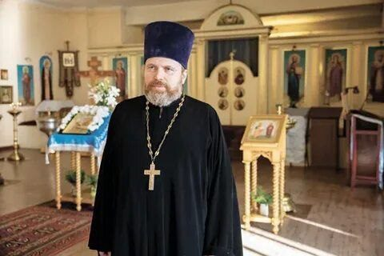
Archpriest Vladimir Goncharenko
Born 29 November 1976. He graduated in physics from St Petersburg State University (1997), the St Petersburg Theological Seminary (2001) and the St Petersburg Theological Academy (2005), and studied at the National and Kapodistrian University of Athens in 2004–2005. A Candidate of Theology, he teaches at the St Petersburg Theological Academy.
Ordained deacon on 4 December 2005 and priest on 15 January 2006; raised to archpriest in 2016. He became rector of the Putilov Church on 4 March 2006, soon after the building was returned to the Church; the first Divine Liturgy in the lower church after a long interval was served in March 2006.
For many years Fr Vladimir has supported the Greek community of the city: he serves with Greek chant and preaches in Greek, celebrates memorial services and doxologies on Greek national dates, and warmly hosts the community's gatherings in the church refectory.
The church is a regular home for the Greeks of St Petersburg. Services for national anniversaries are held together with the Consulate General of Greece (consulate website) and with the participation of the Consulate General of the Republic of Cyprus (consulate website); lectures and the film club are organised by the Cultural and Educational Society of the Greeks of St Petersburg (greekspb.com).
A festive service for the Greek national holiday, at the invitation of the Consulate General of Greece. Fr Vladimir led the service, followed by tea.
Michael Cacoyannis's first feature, in the original Greek with Russian subtitles. Before the screening Alexander Danilov spoke about the director of “Zorba the Greek”, “Stella” and “Electra”. Organised by the Society of the Greeks of St Petersburg.
The second lecture in the cycle “The Grace of Athos”, given by Sergei L. Brovko.
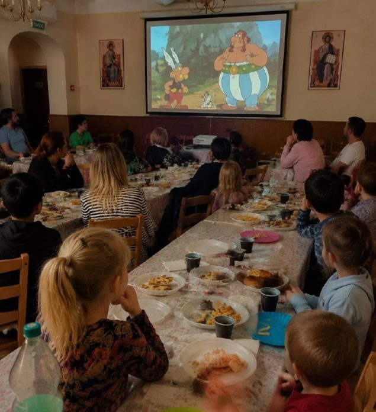
A family evening: the cartoon “The Twelve Tasks of Asterix”, food, games and conversation. Thanks to Fr Vladimir for his hospitality and to Emmanuel Papoutsoglou for the treats.
A film about the 1943 events on Cephalonia, shown dubbed in Russian with Greek subtitles; discussion afterwards. Free admission.
A memorial litia for the victims, organised by the Consulate General of Greece together with Archpriest Vladimir Goncharenko, followed by a short commemorative gathering.
A festive service led by Fr Vladimir for the anniversary of Greek independence, followed by the traditional tea.
The first lecture in the cycle “The Grace of Athos”, after the festive service. In Russian; free admission.
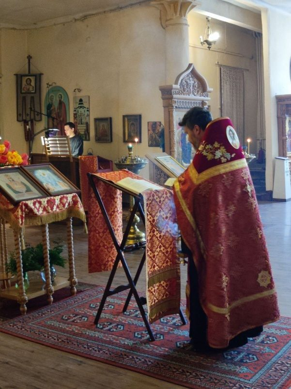
Fr Vladimir led the service in Greek and Church Slavonic. Representatives of the Consulate General of Greece, community members and parishioners attended. At the tea, greetings were read from Consul General Dimitrios Sparos and from community chairman Efstratios Siourdakis; participants shared family stories.
Fr Vladimir led the Liturgy, attended by the Consuls General of Greece, Spyridon Vulgaris (Greek consulate), and of Cyprus, Dimitrios Asos (Cypriot consulate). The church choir sang together with Theological Academy students from Cyprus and Syria.
A Divine Liturgy in Greek organised by the Consulate General of Greece together with a priest of the church.
Photo reports, announcements and videos of the meetings are published on the parish and community pages. Below are links and photographs of the meetings.
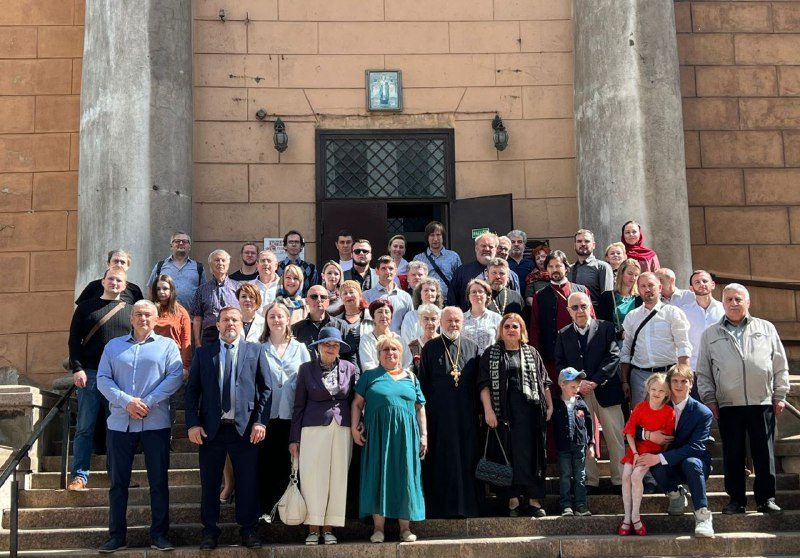
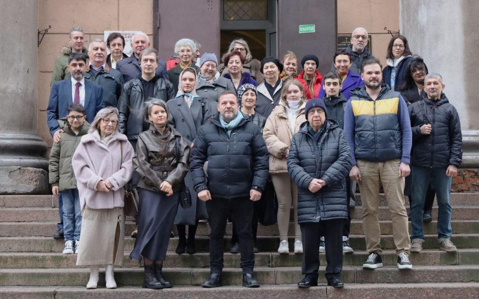
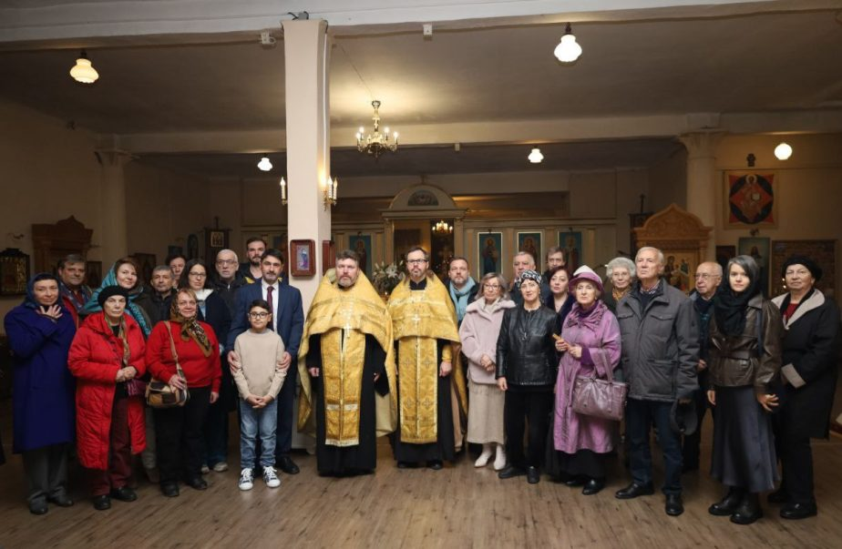
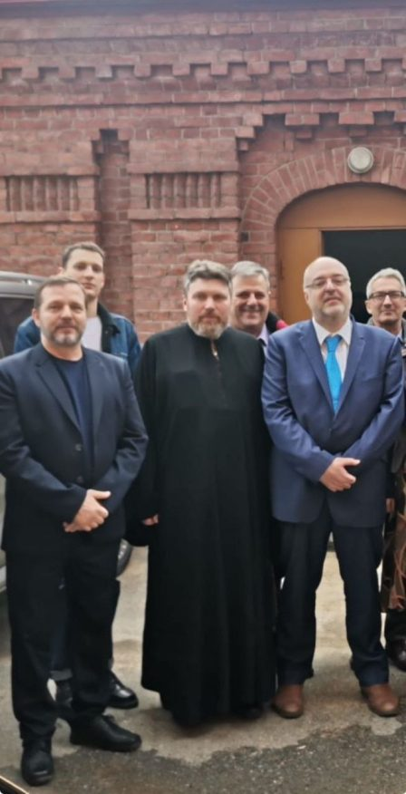
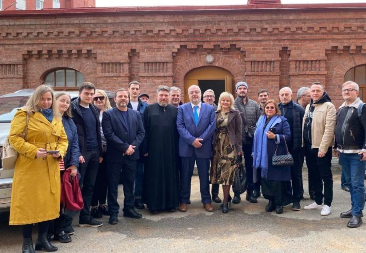
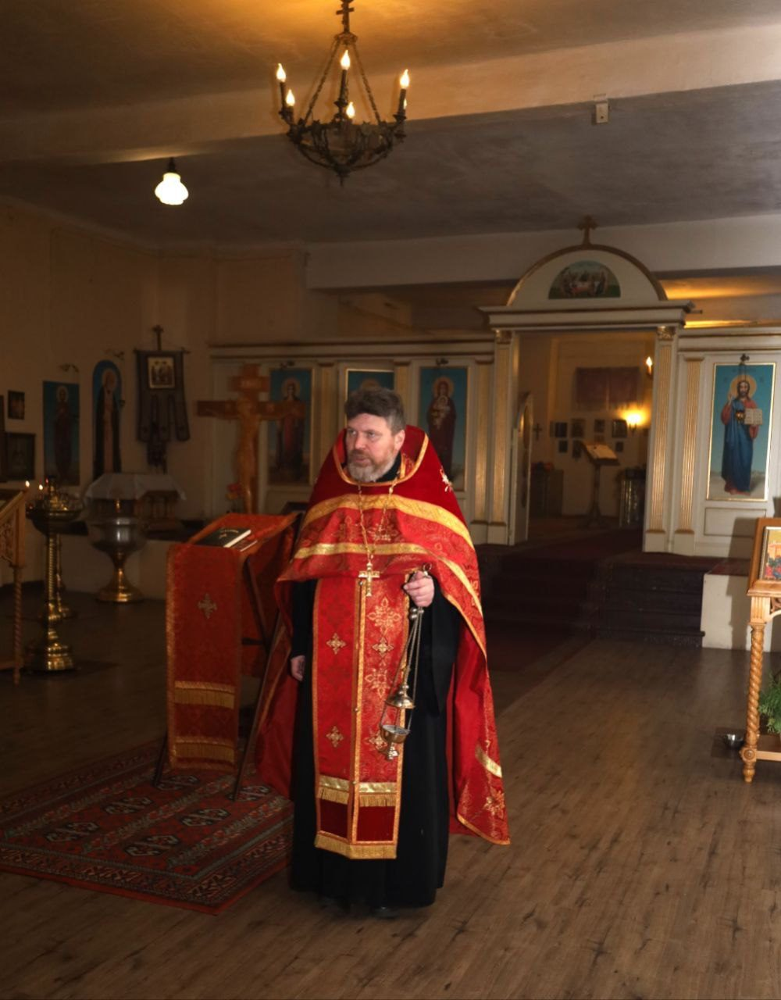
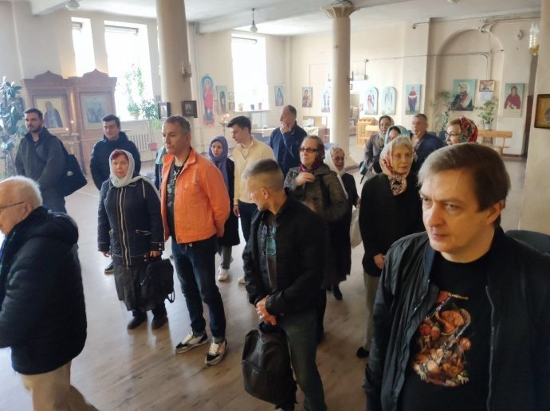
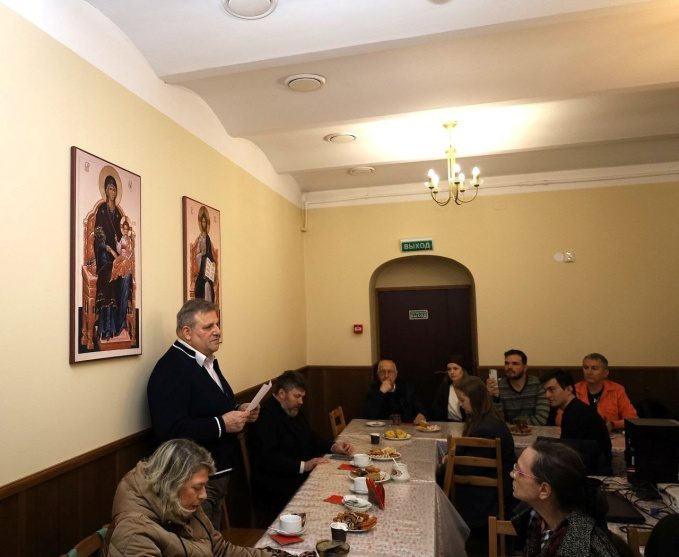
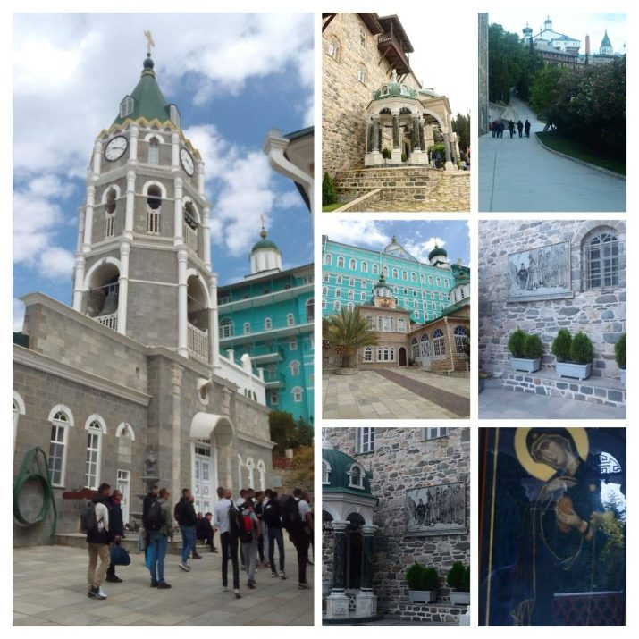
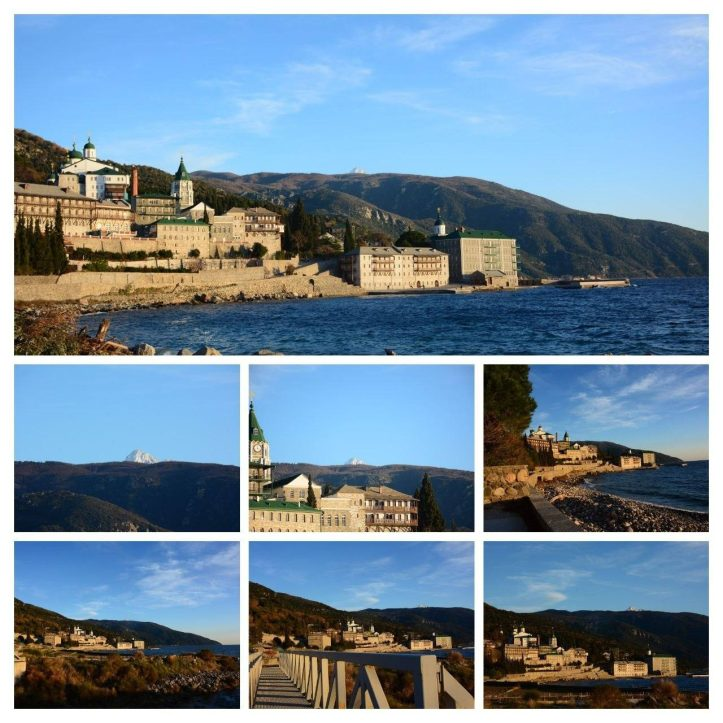
Photographs of the meetings — from materials of the Greek community (Telegram channel, greekspb.com) and the parish.